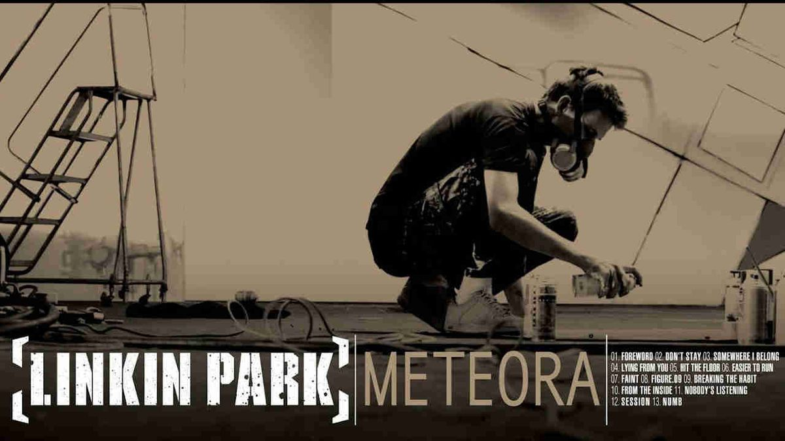

|
Linkin Park - Meteora: A Nu Metal Milestone  |
||
|
Album Overview Meteora is the second studio album by American rock band Linkin Park, released on March 25, 2003, through Warner Bros. Records. The album was produced by the band alongside Don Gilmore. Meteora is the follow-up to Linkin Park's debut album, Hybrid Theory, and continues the band's nu metal sound while incorporating elements of other genres. Title: Meteora Artist: Linkin Park Release Date: March 25, 2003 Genre: Nu Metal, Alternative Metal, Rap Rock Label: Warner Bros. Records Duration: 36:43 Tracklist
Notable Singles
Impact and Legacy Meteora was a massive commercial success, debuting at number one on the US Billboard 200 chart and achieving multi-platinum status in several countries. The album further established Linkin Park as one of the leading bands in the nu metal and alternative metal genres. It showcased the band's evolving sound, incorporating more electronic elements and showcasing improved songwriting. Songs like "Numb" and "Breaking the Habit" became iconic tracks of the 2000s rock scene. The album's success helped solidify Linkin Park's place in mainstream music and expanded their global fanbase. Its influence can be heard in numerous rock and metal bands that followed, and it remains a beloved album among fans of the genre. |